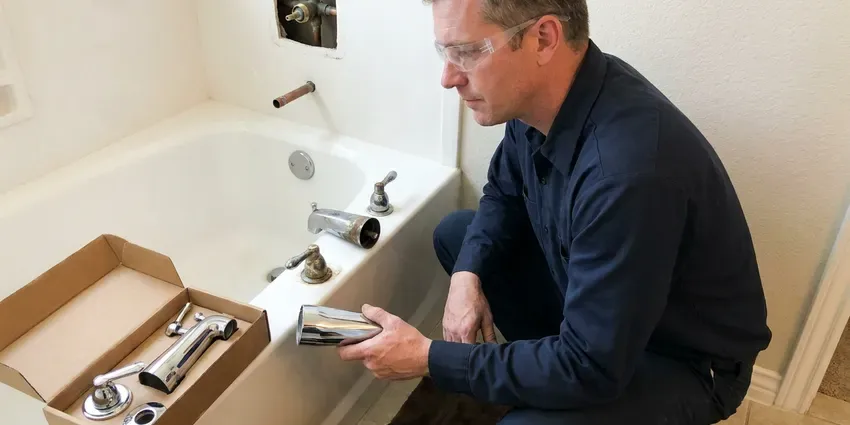

Toilet Replacement in Blaine, MN
We remove your old toilet, set the new one on a fresh seal and haul the old one away, all in one visit in Blaine, MN.
- Old Toilet Removed
- Flat Pricing
- Floors Protected
- Insured Plumbers
Swap Your Old Toilet in Blaine, MN
Call CNV Plumbing for honest advice on which toilet to buy.
Toilet Replacement in Blaine, MN Done Same Day
CNV Plumbing recommends toilets by how they flush, not by markup, and we point you to models with a 3 inch flush valve and a MaP score that keeps double flushes rare. Builder-grade can be fine. Premium one-piece toilets make sense for some bathrooms, and we will say which category fits yours.
Some of what we do:
- Angle stop and supply line upgrades
- WaterSense toilet upgrades
- Matching rough-in, bowl shape and height to your space

Additional Bathroom Plumbing Services in Blaine, MN
From toilets to showers, our bathroom plumbing team in Blaine, MN handles repairs, installs, and upgrades with tidy, code-compliant work.


Customers
Why Choose CNV Plumbing for Toilet Replacement in Blaine, MN?
Our plumbers set every toilet level, snug the closet bolts by hand feel and finish with a wrench, since overtightening is the most common way a new bowl cracks. Porcelain does not give a second chance. We test with several full flushes and a dry towel at the base before calling it done.
- Experienced Crew, We have handled toilets from every decade and style.
- Code Knowledge, Every swap meets local code for the connections and mounting.
- Hidden Issue Check, We check the flange and subfloor before the new toilet goes down.
Citywide Coverage
We replace toilets in every part of Blaine, from older neighborhoods with cast iron drains to newer subdivisions built with PVC and plastic flanges. Pricing does not change by neighborhood. Older homes take a bit more care at the flange.
Experienced Team
The CNV Plumbing crew is licensed and background-checked, and they treat your bathroom like a finished room, with drop cloths down before the old toilet comes off the floor. They clean as they go. Old wax gets scraped away, not left under the new toilet.
Safety-First Approach
Rotted subflooring gets shown to you before we go further, because setting a new toilet on soft plywood means the seal will fail again within months. The repair is your call. Often a small plywood patch around the flange does it.
Trusted Certified Blaine Plumbing Services Professionals
At CNV Plumbing, we take pride in licensed, certified plumbing services throughout Blaine, MN. Credentials matter in this trade. Our plumbers hold recognized industry credentials, and they follow strict safety and quality rules on every repair, installation and maintenance call we run.
Call Us Now PHCC Plumbing Contractor Recognition
PHCC Plumbing Contractor Recognition Better Business Bureau (BBB) Accreditation
Better Business Bureau (BBB) Accreditation Angi Certified Pro
Angi Certified Pro ISO 9001 Quality Management Certification
ISO 9001 Quality Management CertificationTypes of Toilet Replacements in Blaine, MN
Toilet Rough-In Adjustments in Blaine, MN
Rough-in is the distance from the finished wall to the center of the drain, usually 12 inches, sometimes 10 or 14 in older homes. Take the measurement from the wall to the closet bolts, not from the baseboard trim. If the new toilet's rough-in does not match, it either sits too far out or will not fit. Offset flanges can fix a small mismatch.

High-Efficiency Toilet Installation in Blaine, MN
Toilets made before 1994 often use 3.5 gallons a flush, and some from the 1970s use five or more. Current WaterSense models are rated at 1.28 gallons per flush or less, and the better ones still clear the bowl in one try because the trapway and flush valve are larger than they used to be. Savings show up fast. Some water providers offer a rebate, so ask before you buy.
Comfort Height Toilet Installation in Blaine
Chair height toilets put the seat about 17 to 19 inches off the floor, roughly two inches higher than a standard bowl, and that makes a real difference for knees and hips. No plumbing changes are needed. We often pair it with an elongated bowl and a soft-close seat, and the swap takes the same couple of hours as any other.
Toilet Brands We Replace in Blaine
Brand matters less than model, because every major maker sells a great toilet and a mediocre one at nearly the same price. Our picks come down to flush valve size and the MaP score. Parts availability counts too. Proprietary flappers and fill valves mean that ten years from now, a simple fix becomes a special order.
Choosing a Toilet Brand in Blaine, MN
Kohler, American Standard, TOTO, Gerber and Mansfield all make solid toilets, and each line has a few models we steer people away from because of weak flushes or hard-to-find parts. You get our honest take on which models to skip. Rough-in and bowl shape decide what fits, and we check both before you buy.
Commercial Flush Valve Upgrades in Blaine
Manual flush valves on older commercial toilets leak at the handle and stick open, and swapping to a sensor valve during a replacement improves hygiene without changing the rough-in. You can pick battery or hardwired sensors. Work can happen after hours, and we check that the new fixtures meet accessibility requirements.
Cracked Bowl or Tank Replacement in Blaine
Sometimes only the tank is cracked, and if the model is still in production, a matching tank costs less than a whole new toilet. We check the model number first. If the bowl is the cracked part, the whole toilet gets replaced, since the bowl carries the seal to the floor and cannot be patched.

High-Efficiency Toilet (HET) Upgrades in Blaine, MN
High-efficiency toilets carry a WaterSense label and a MaP score, which tells you how many grams of waste the toilet clears in one flush. Look for a score of at least 800. Higher numbers mean fewer double flushes and fewer plunger trips, and that is where the real water savings come from.
Toilet Replacement Near Me in Blaine, MN
A local plumber knows that Blaine houses built before the 1990s often have a cast iron flange under the toilet, and those can be rusted thin by the time the toilet comes off. We bring repair rings for that. The flange gets handled on the same visit.
Searching for toilet replacement near me usually means the old one has cracked, keeps clogging or has needed one repair too many in the last few years. You can get a price range over the phone, and our plumbers carry common models on the truck around Blaine, MN. Same-day swaps are common. Scale buildup shortens water heater life and clogs aerators, which is why water softeners are so common in the state.
CNV Plumbing at a Glance
- Licensed and insured plumbers serving Blaine, MN
- 24/7 emergency service with same-day scheduling
- Clear written estimates, no hidden fees
- 4.8-star rated by 501+ Minnesota customers
Blaine Map
Blaine Information
- Population
- 73,774
- Area codes
- 612/507/320
- Service area
- Blaine and towns within a 40 mile drive
- Nearby
- Coon Rapids, Brooklyn Park, Maple Grove, Minneapolis
Swapping an old toilet in Blaine, MN for a WaterSense model is one of the simplest ways to cut household water use and lower the monthly bill.
Expert Services
Call CNV Plumbing for honest, reliable plumbing from people who know the trade in Blaine, MN.
Our Specialized Plumbing Services in Blaine, MN
At CNV Plumbing, you get every kind of plumbing service from one company across Blaine, MN. We go from leak detection all the way to full system installations, for homes and commercial buildings, and we do it quickly at a fair price. Here are the core services we offer:


Our Toilet Replacement Process in Blaine, MN
Here is how a toilet replacement normally goes, start to finish.
Call for a Quote
Call (612) 712-9569 and describe the toilet you have now. We set a time and give a price range.
On-Site Check
Our plumber checks the rough-in, the shutoff and the flange at your Blaine home and helps you pick a model.
Install and Test
We remove the old toilet, set the new one on a fresh seal and test for leaks.
Frequently Asked Questions About Toilet Replacement in Blaine
Most replacements with a quality standard toilet, labor and disposal cost $450 to $950, and that covers the wax ring, bolts and a new supply line too. A one-piece or smart toilet can push the total to somewhere between $1,200 and $2,500. If the flange needs work, plan on another $100 to $250.
Cracked porcelain is the clearest one, followed by clogs that come back every week, a base that rocks again after every reset, and a tank that uses 3.5 gallons or more. At that stage, more repairs are throwing good money after bad. If a fix is still reasonable, we tell you.
A like-for-like replacement in the same spot generally does not. Moving drains or adding a bathroom usually does.
Manufacturers usually cover the china for years and the tank parts for a shorter period, often one to five years depending on the brand. Our labor guarantee sits on top of that. If the install leaks, we come back.
Not for most straight swaps. Changing the toilet's location or altering the drain line usually needs a permit in Blaine, MN, and the inspector may want to see the work before the floor is finished. You will know which case applies before we start.
Most swaps take 1.5 to 2.5 hours. If the flange or subfloor needs work, add up to an hour.
Plan on two to four hours if the flange or subfloor needs work, and closer to two for a clean swap with a solid flange. The bathroom is back in service the same day. We test before we leave.
Usually not for a like-for-like swap in the same spot. Moving the drain or adding a new toilet brings in a permit under the local code in Blaine, and sometimes an inspection before the floor gets closed up. We confirm the requirement before any work.
Hear From Customers Who Hired Our Plumbing Experts

Patricia H.
We had a slab leak that two other companies could not find. CNV Plumbing located it in under an hour with a listening device. They rerouted the line through the attic instead of breaking up the floor, so we kept our kitchen tile.
Slab Leak Repair · Maple Grove, MN
Nathan E.
Our tankless heater kept throwing an error code and shutting off mid shower. The tech flushed the heat exchanger, which was full of scale, and replaced a bad flow sensor. Hot water has been steady for half a year now.
Water Heater Repair · Coon Rapids, MN
Brian W.
I smelled gas behind the dryer and called right away. The plumber found a corroded flex connector, replaced it, and pressure tested the whole line before turning the gas back on. He let me watch the gauge hold steady for fifteen minutes.
Gas Line Repair · Plymouth, MNAngela D.
Our sump pump quit during a storm and the water was an inch from the basement carpet. CNV Plumbing put in a new pump with a battery backup that same evening. We have had two heavy rains since. It kicked on both times.
Sump Pump · Maple Grove, MNCarlos V.
Our house still had galvanized pipe, and upstairs the shower was a trickle. The crew repiped everything in PEX over three days and patched every drywall hole before they left. The pressure difference is night and day.
Repiping · Brooklyn Park, MN
Marcus H.
Grease from the fryer line kept clogging the kitchen drain at my diner. CNV Plumbing hydro jetted the line after closing, showed me the buildup on camera, and set us up on a quarterly cleaning so it does not catch us on a Friday again.
Drain Cleaning · Minneapolis, MN